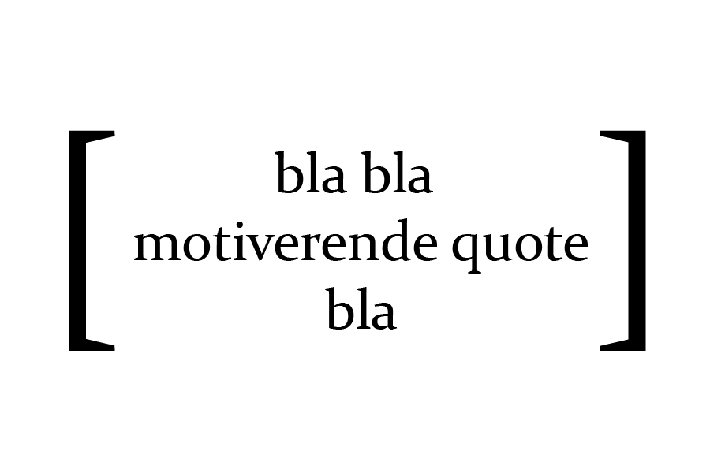

Links voor meer informatie
Mijn motivatie & Hoe ik gemotiveerd blijf.
ik vind dit een leuk vak zoals ik heb gementioneerd bij mijn vooropleiding tab. ik ben nieuwsgierig en leergierig, nieuwe en leuke dingen leren vind ik super leuk.
daarnaast hoe ik gemotiveerd blijf is gewoon lekker doen! en af en toe de benodigde pauzes nemen zonder te veel pauzes te hebben en zonder te stressen. en als iets even niet werkt of lukt dan stop ik en drink ik even wat.
